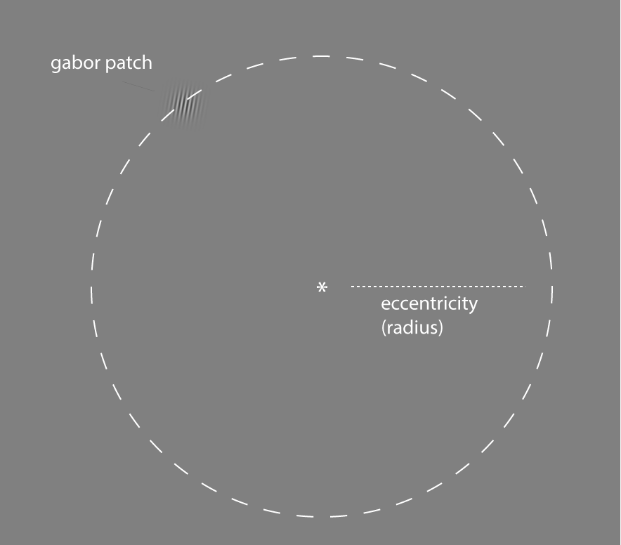

from IPython.core.display import HTML, Markdown, display
import numpy.random as npr
import numpy as np
import pandas as pd
import seaborn as sns
import matplotlib.pyplot as plt
import scipy.stats as stats
import statsmodels.formula.api as smf
import pingouin as pg
import ipywidgets as widgets
# Enable plots inside the Jupyter Notebook
%matplotlib inline
Signal detection: Part 2#
Authored by Todd Gureckis.
In the previous lab you learned some of the basis analysis steps involved in signal detection analysis. In particular, we learned how to compute a statistic we called d’ (dprime) and c (bias/criterion). These variables are commonly used in studies of perception to understand the performance of a subject on a task independent of their response bias (here meaning tendency to give a particular response).
In the second part of the lab we will analyze data from a simple detection experiment you will have just conducted on yourselves. You will get to put your python knowledge into practice by reading in the data analyzing it.
Experiment design#
In the experiment, you saw a number of trials where a small fixation cross appeared for 500 ms. Next, a relatively low contrast gabor patch appeared someplace at a constant distance from the fixation for another 500ms. This was set so that the stimulus was far enough away that you could only really barely detect it using your peripheral vision. Your task was to indicate if it was a “stimulus present” trial or a “stimulus absent” trial. The computer recorded your response and your reaction time.
An overview of the situation is shown here:
{kind=link}

The things we didn’t measure but did control!#
You have to look closely to see the tiny gabor patch! On each trial the gabor patch’s location was chosen at random but to keep things roughly the same difficulty it always appeared on the edge of the circle with a given radius. The term eccentricity is sometimes used to talk about the distance of a stimulus from a central fixation point and it is often measured in various units of the degrees of the angle of a triangle formed between the observer’s eye, the central fixation point, and the location of the stimulus (usually its center). However, this measure is only really meaningful if all observers view the stimulus on the same size monitor and with a fixed viewing distance from the screen. Since we did this a little more informally (using your own laptops) we have much less information about the visual angle of the eccentricity and so we will ignore it for now.
The things we manipulated!#
There were actually two different gabor pathes shown on any given “stimulus present” trial. One was a low contrast stimulus:
and the other a high contrast stimulus:
This should obviously influence the detection of the stimulus making it harder to see the stimulus in the low contrast condition compared to the high contrast condition.
In total there were 50 high contrast stimulus present trials, 50 low contrast stimulus present trials, and 100 stimulus absent trial. The purpose of this was so that a perfect subject with robot-quality vision would say “yes” half the time in the experiment so there is no overall bias toward one response.
In this lab we are interested in analyzing the effect of stimulus contrast on the two signal detection variables we learned about in the previous lecture and lab.
Analysis Steps#
Remember from the previous lab that our model for signal detection looks something like this:

and we showed how we can compute \(d'\) and \(c\) by computing only the number of false alarms and hits and subjecting those to a particular mathematical transformation. In this case we actually have two stimulus conditions (high/low contrast). So our goal will be to compute the hits and false alarms separately for the two different types of stimuli. This will mean that each person in our experiment will be described by four numbers:
A d’ (d-prime) under high contrast conditions
A d’ (d-prime) under low contrast conditions
A c under high contrast conditions
A c under low contrast conditions
Once we have this we want to perform a simple hypothesis test. Is performance, measured by d’ higher in the high contrast condition. We have strong reason to suspect this is the case but it’ll be a nice check of our understanding if we can related the abstract calculation we performed in the previous lab to answer this simple quesiton.
Answering this question will push our skills at using pandas to organize our data, and using pingouin to compute a t-test.
If we compute one $d'$ for each participant for each stimulus conditon and want to compare performance in the two conditions, what type of t-test should we most likely use?
Enter your plan for the analysis as a markdown cell.
In the lab on multiple regression we read in the data from each participant into a pandas data frame using `read_csv` and the used `pd.concat()` to combine them. Refer back to the lab if you need to but we will want to do the exact same thing with this data. After you read in the data, inspect the columns and check the data for any inconsistencies that might affect our analysis (e.g., subjects who didn't perform any trials, etc...).
Enter your code here.
As a reminder the following show a simple for loop (called a list comprehension) that lets you get the filenames for the lab data set. You can use this to find the file names that you need to read in with pd.read_csv(). If you need a reminder refer back to your mental rotation lab which should be on your Jupyterhub node still!
# this is an example list comprehension which reads in the all the files.
# the f.startswith() part just gets rid of any junk files in that folder
filenames=['sdt1-data/'+f for f in os.listdir('sdt1-data') if not f.startswith('.')]
Did you find any interesting or important points about the data that you want to share with the class? Let's get everyone on the same page so we get similar results so if you find something important (good or bad) please take a moment and share!
Now that we have the analysis dataframe let's perform our planned analysis on a single subject. Create a new dataframe, subselecting from the main frame with the data from a single subject.
Enter your code here.
Referring back to the first notebook from the lab compute the hits and false alarms for this subject for the high and low contrast stimuli. One note about the false alarms: remember that false alarms are trials where the stimulus was absent but the subject said it was present. There is only one type of these trials in the experiment. So when you compute the statistics you really will create three numbers of this participant. The high contrast hits, low constrast hits, and overall false alarm rate. What are these numbers for this subject? Remember also that if you take the `mean()` of a column of 0/1 values it will tell you the proportion of those trials which are 1.
Enter your code here.
Ok now compute the d' and c values for this subject. Refer back to the previous notebook for reference if you need the equations and python code. What can you tell from looking at your computed values? If for some reason you can't compute these values in your experiment (e.g., if the subject has no hits or no false alarms) then try question 4 again with a different subject.
Enter your code here.
Ok, so now you have performed the desired analysis for one subject. You have computed four numbers for that subject described above. Now we want to repeat this for each subject. There are two ways to do this. One is using the pandas groupby() function. This is somewhat of the advanced mode version but if you do this you can probably perform the analysis in only 5-6 lines of code. An alternative approach is to generalize the code you just wrote to use a for loop that iterates over each subject in the data frame. Which ever way you choose you might find it helpful to refer to the Forty For Loops notebook I provided which shows some example templates for using for loops to analyze individual subject data in pandas dataframes. The end result is that you want a dataframe containing the d' and c' for each subject for each stimulus condition.
Enter your code here.
Now that you have your summary statistics computed, our next step is to ask if the conditions are different on either the d' or c measure. Conduct the appropriate t-test to tell if these conditions are different. The chapter reading from this week has all the code you need. However you might find it helpful to refer to the pingouin documentation for the t-test function.
Enter your code here.
This question is a bonus but asks you to verify the assumptions of the chosen t-test hold. Usually this involves looking to see that the distribution of scores you are analyzing are roughly "normally" distributed. The textbook showed a few example way to check including the histogram, the qqplot, and the Shapiro-Wilks test. Perform this test on your data. If the data seem very non-normal you might consider switching your t-test to the non-parametric alternative discussed in the chapter (the wilcoxon or Mahn-Whitney test).
Enter your code here.
Ok great job! You have your data, you have your t-test, you have everything you need to answer the following questions: 1. Is performance higher in the low or high contrast condition? How do you know? How would you report the statistical evidence in favor of your conclusion in a paper? Is the criterion different between the conditions? How do you know? Overall was performance high or low in this task?
Enter your Markdown text here.
The final question asks you to consider limitations to this experiment design. What other analyses might be interesting to perform on this data? If you could change the experiment is there another type of question you would ask?
Enter your Markdown text here.